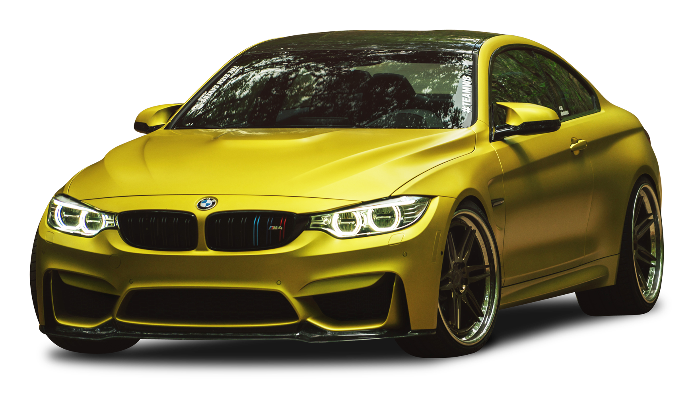
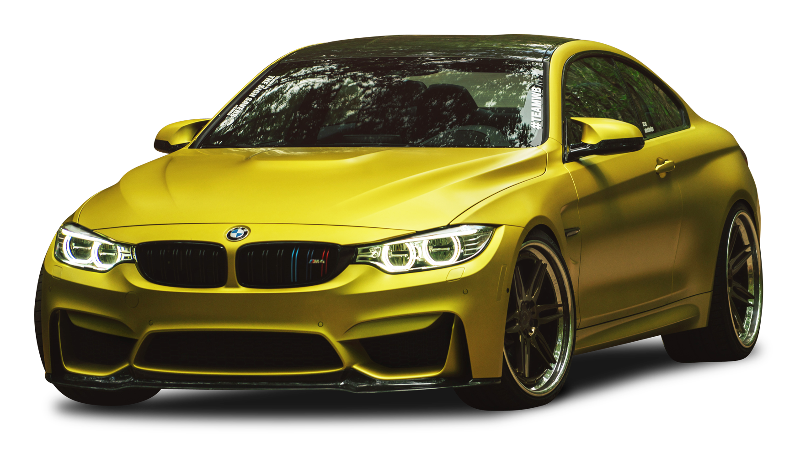
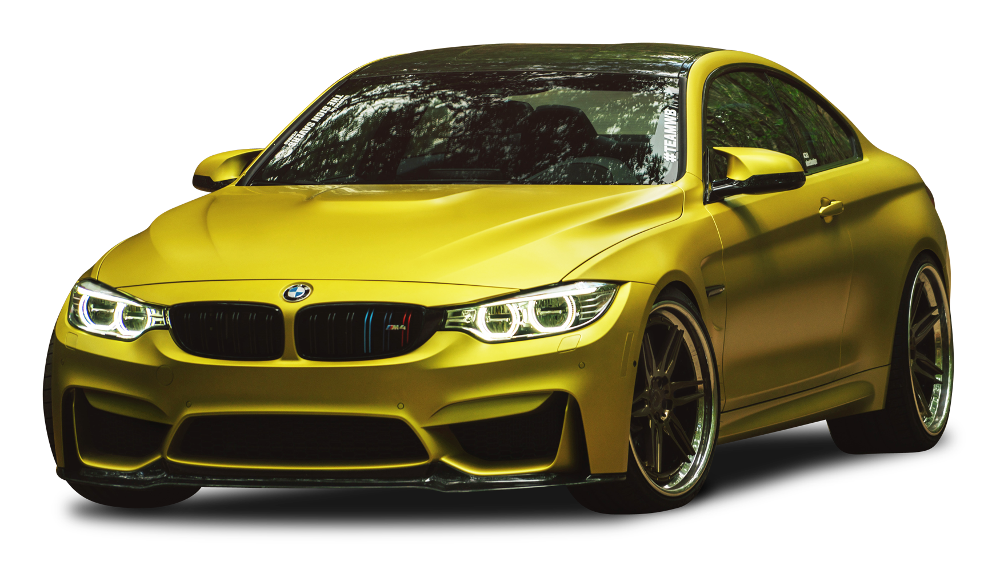
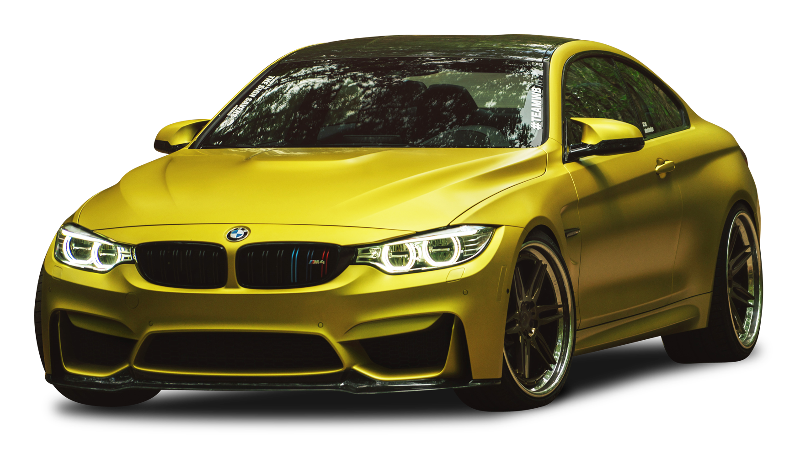

BMW, short for Bayerische Motoren Werke, is a prestigious German automobile manufacturer known for luxury vehicles that combine performance, innovation, and advanced engineering. Founded in 1916, BMW initially produced aircraft engines before shifting to motorcycles and, eventually, automobiles, with its first car, the BMW 3/15, launched in 1929. The brand's motto, "The Ultimate Driving Machine," emphasizes its focus on delivering a superior driving experience through sporty design and powerful engines.
Notable models include the BMW Series 3, a compact sedan, the Series 5, a mid-size luxury sedan, and the X Series SUVs. In recent years, BMW has committed to sustainability with the introduction of the i Series, featuring electric vehicles, and initiatives to reduce its carbon footprint. Active in motorsports, BMW continues to push the boundaries of automotive technology, maintaining its status as a leading global automaker with a legacy of luxury and performance.
In addition to its commitment to sustainability, BMW has also invested heavily in innovative technologies to enhance driver safety and connectivity. The company has integrated advanced driver-assistance systems (ADAS) across its lineup, offering features such as adaptive cruise control, lane-keeping assistance, and automated parking. Furthermore, BMW's iDrive infotainment system provides seamless connectivity and access to various applications, allowing drivers to stay connected while on the road. This focus on technology not only elevates the driving experience but also aligns with modern consumer expectations for convenience and safety.
Moreover, BMW has cultivated a strong brand identity that resonates with a diverse audience, ranging from young professionals to luxury car enthusiasts. The company regularly engages with its customer base through events, exhibitions, and driving experiences that highlight the performance capabilities of its vehicles. By fostering a sense of community and loyalty among its customers, BMW has successfully positioned itself as more than just a car manufacturer—it's a lifestyle brand that embodies sophistication and passion for driving. This approach has solidified BMW's reputation as a leader in the automotive industry, appealing to those who value quality, performance, and a premium experience.